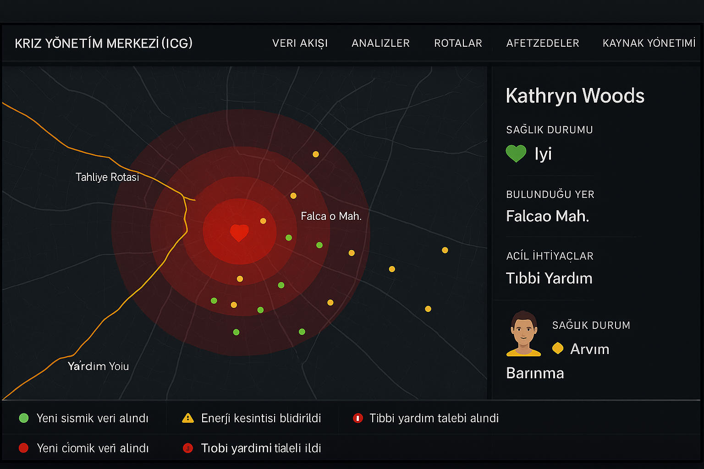
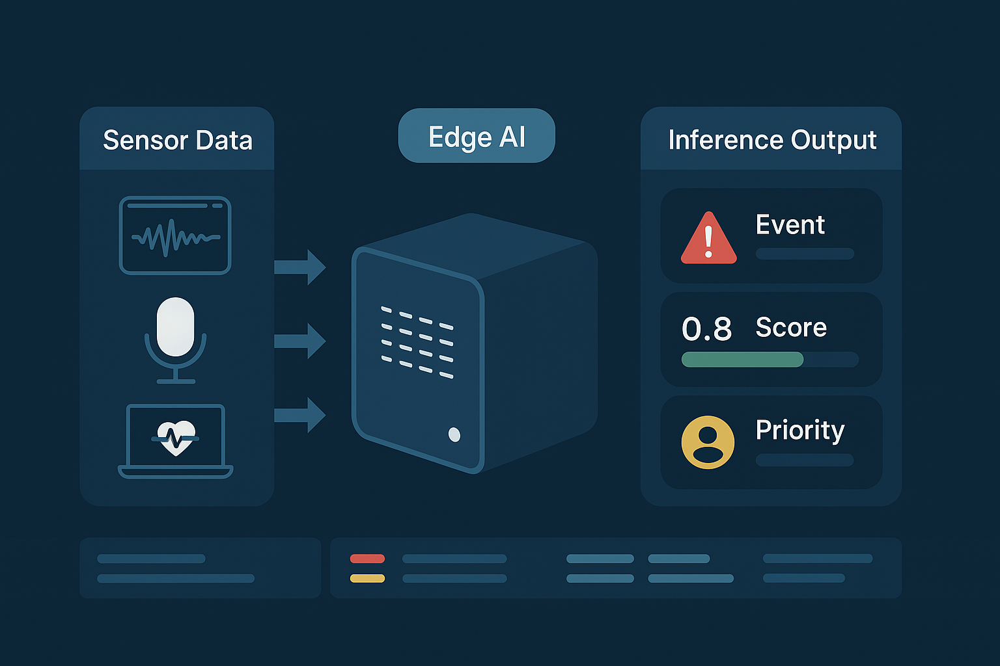
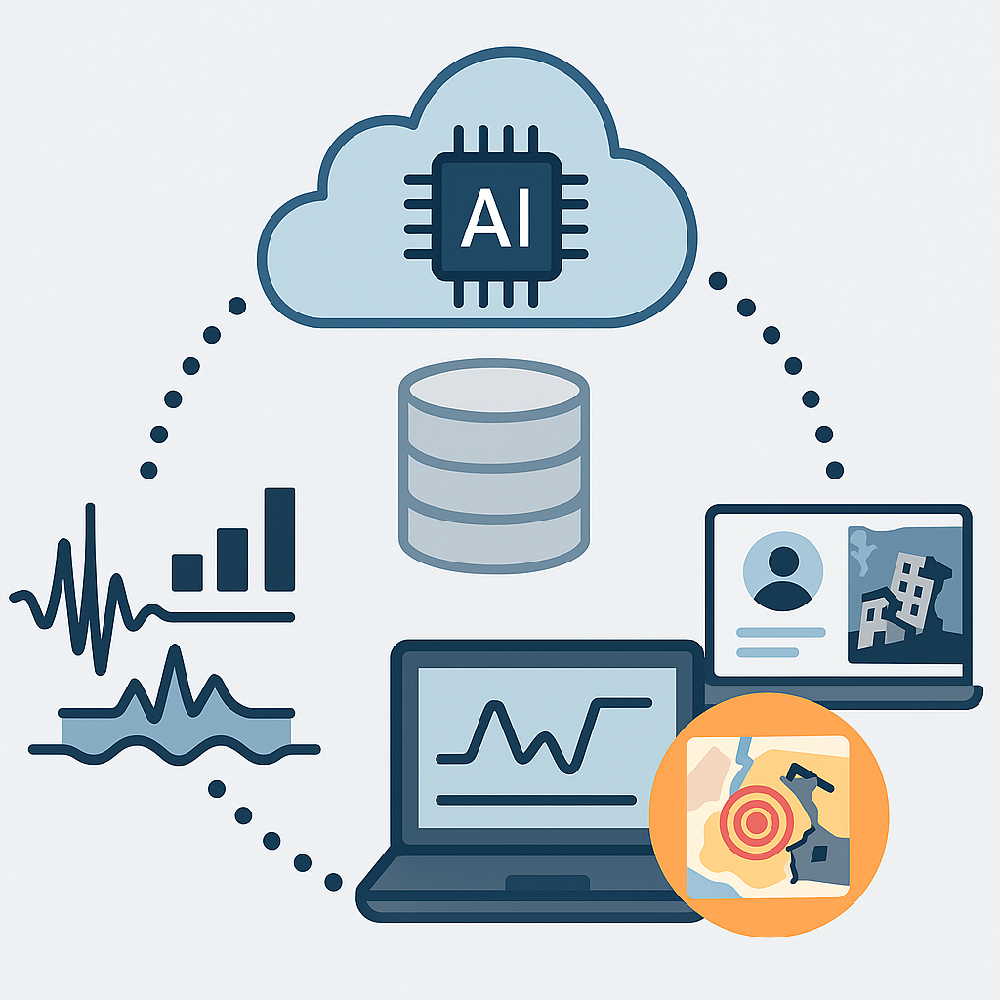
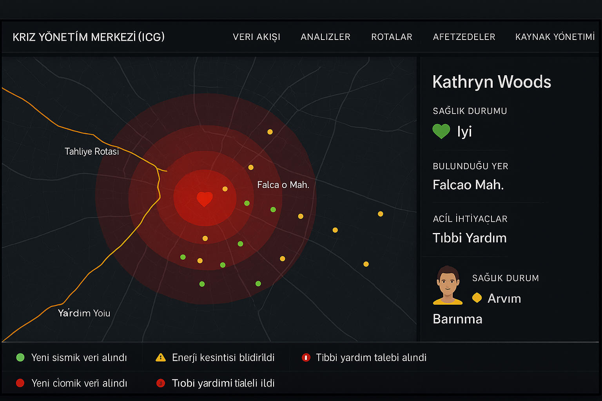
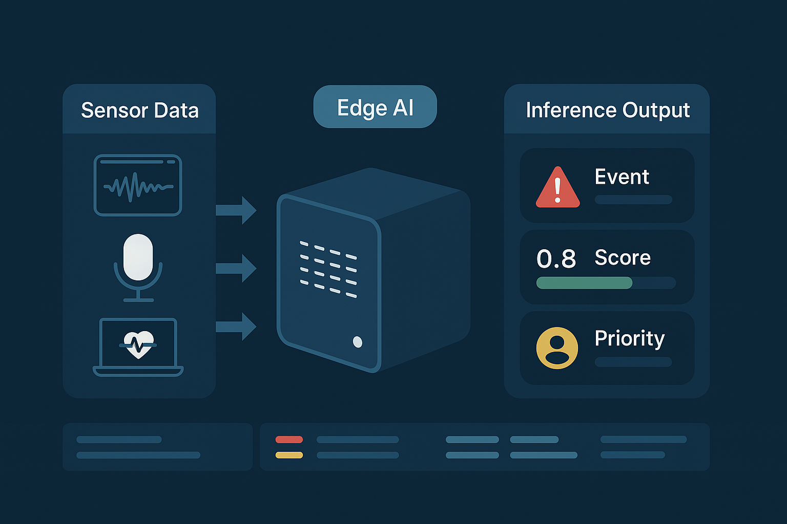
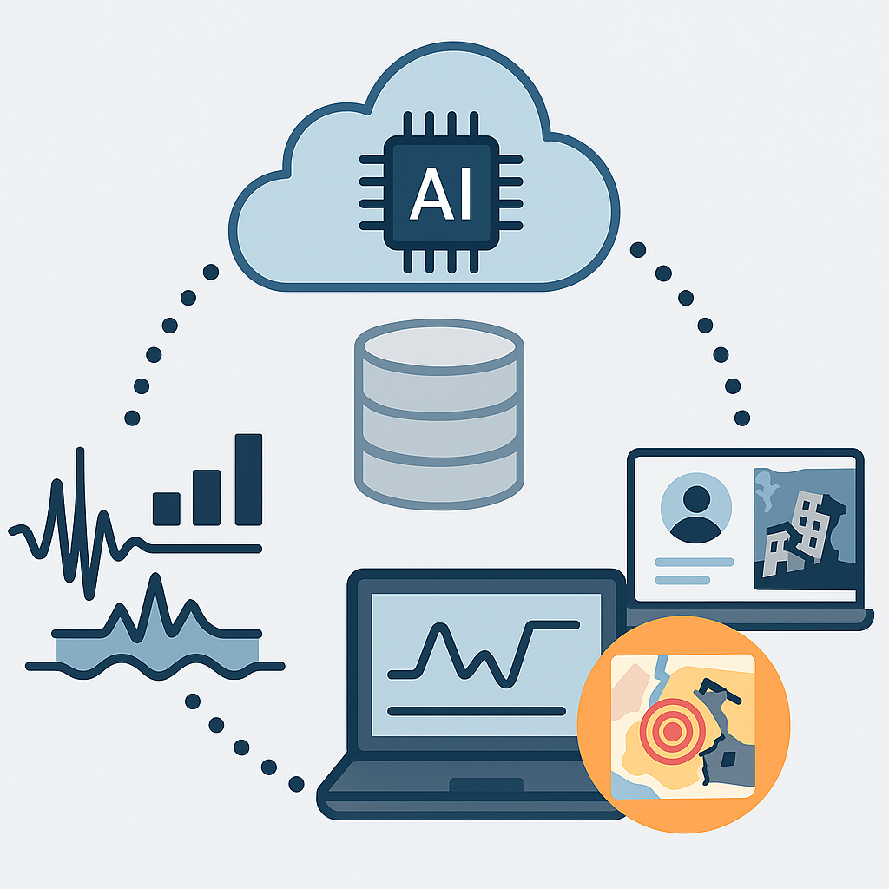

KURTAR: IoT ve Yapay Zeka Temelli Afet Müdahale Platformu
Deprem, sel, çığ gibi afetlerde hayat kurtaran teknoloji
Deprem, sel, çığ gibi afetlerde hayat kurtaran teknoloji
KURTAR projesi, afet anında mobil cihazlar ve IoT teknolojileri üzerinden gerçek zamanlı veri toplayarak, otonom karar verme yeteneklerine sahip yapay zeka sistemleri ile kurtarma süreçlerini optimize etmeyi hedeflemektedir. Sensörlerden gelen veriler, makine öğrenmesi ve derin öğrenme destekli analizlerle anlamlandırılarak, merkezi sunuculara aktarılır ve harita tabanlı arayüzlerle koordinasyon sağlanır.
Zaman serisi analizleri, afet davranış modellemesi ve destek sistemleri için veri odaklı karar mekanizmaları.
IMU, jiroskop, GPS ve çevresel sensörlerle veri toplanması ve merkezi sunucuya iletim.
Android/iOS tabanlı uygulamalarla gerçek zamanlı konum bildirimi ve enerji optimizasyonu.
Sunucuda analiz, harita ile yıkım ve kurtarma görselleştirme.
Güncellenebilir, modüler, düşük güç tüketimli yapılarla uzun süreli çalışabilirlik.

Deprem sonrası ortam koşullarının değerlendirilmesi ve müdahale önceliklendirmesi.
Mobil cihazlar ve bağlı sensörler, sarsıntı ve çevresel verileri gerçek zamanlı olarak toplar.
Veriler, cihaz üzerinde çalışan yapay zeka modelleriyle analiz edilerek sarsıntı ve afet bilgisi çıkarılır.
Sunucular, toplu analizlerle durumu haritalar ve kurtarma ekiplerine rota, risk ve konum önerileri sunar.
 





KURTAR projesi, TÜBİTAK 1001 kapsamında desteklenmektedir. Proje detayları için aşağıdaki bağlantıya tıklayabilirsiniz.
Gazi Üniversitesi Haber Duyurusu